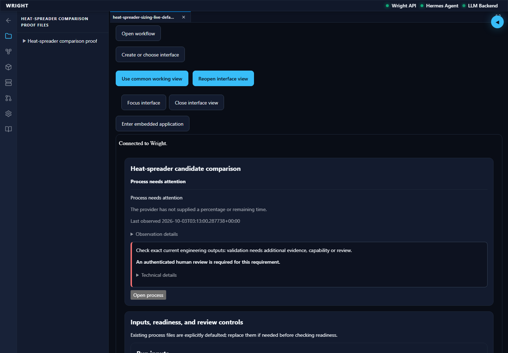
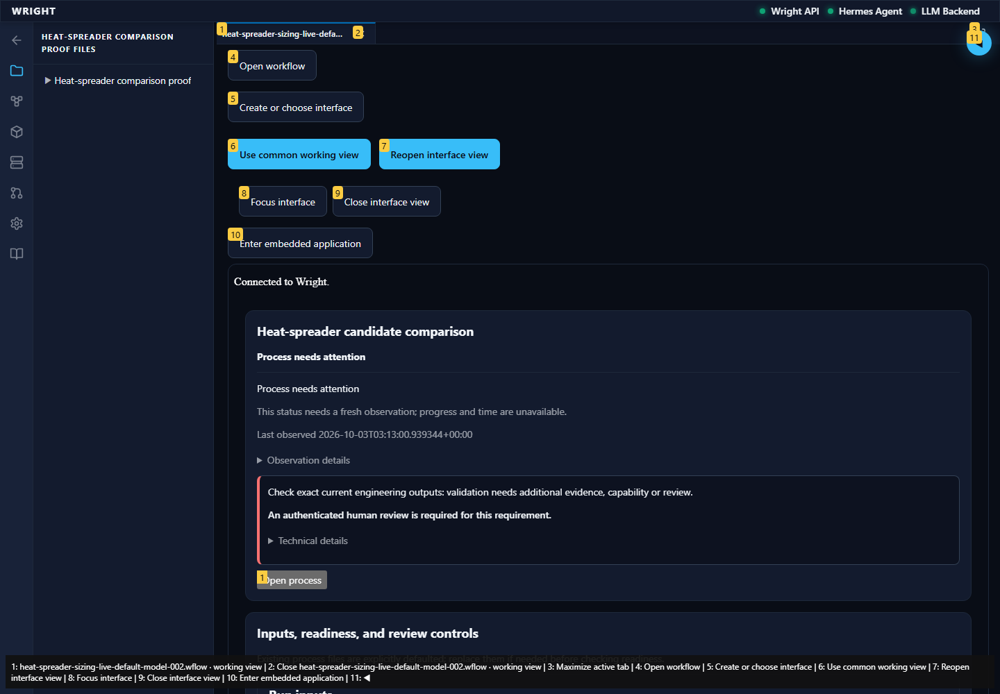
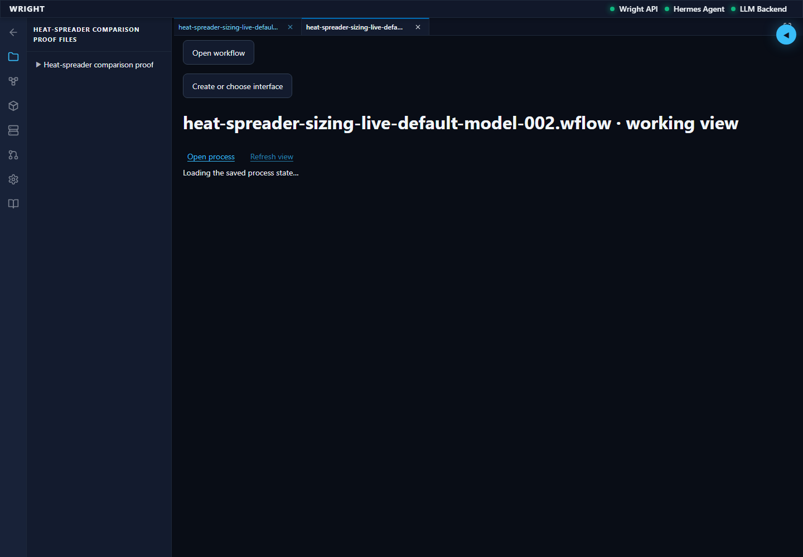
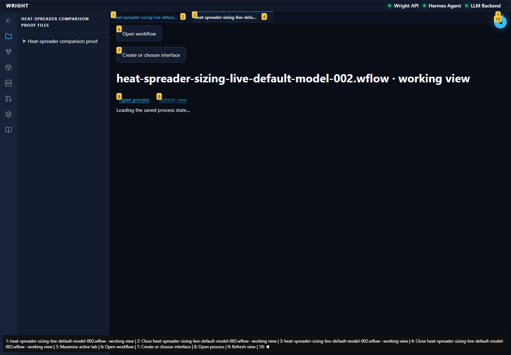

A focused continuation of the verified normal-workspace journey using actual completed CAD/solver outputs. No process decision or physical action.
Status: blocked
The saved shared-controls interface reads all eighteen actual CAD/solver results.
Expected: Exact eighteen-result parity and original held assessment in a working context.
Actual: All eighteen identities match; exact working context and shared controls are present.
raw 
annotated 
The current saved comparison did not meet the exact evidence expectation.
Expected: Exact completed-output parity and useful navigation.
Actual: expect(received).toEqual(expected) // deep equality - Expected - 20 + Received + 1 - Array [ - "67abaa021ee44972a94e3c9cbaa3dbbe:author_cad_live_default_model_002:cad_source", - "67abaa021ee44972a94e3c9cbaa3dbbe:compute_fields_live_default_model_002:baseline_40_coarse", - "67abaa021ee44972a94e3c9cbaa3dbbe:compute_fields_live_default_model_002:baseline_40_fine", - "67abaa021ee44972a94e3c9cbaa3dbbe:compute_fields_live_default_model_002:correspondence", - "67abaa021ee44972a94e3c9cbaa3dbbe:compute_fields_live_default_model_002:decision", - "67abaa021ee44972a94e3c9cbaa3dbbe:compute_fields_live_default_model_002:process-proofs/heat-spreader-sizing/live-default-model-002/outputs/baseline_40-coarse-temperature.vtu", - "67abaa021ee44972a94e3c9cbaa3dbbe:compute_fields_live_default_model_002:process-proofs/heat-spreader-sizing/live-default-model-002/outputs/baseline_40-fine-temperature.vtu", - "67abaa021ee44972a94e3c9cbaa3dbbe:compute_fields_live_default_model_002:process-proofs/heat-spreader-sizing/live-default-model-002/outputs/heat-balance.json", - "67abaa021ee44972a94e3c9cbaa3dbbe:compute_fields_live_default_model_002:process-proofs/heat-spreader-sizing/live-default-model-002/outputs/mesh-comparison.json", - "67abaa021ee44972a94e3c9cbaa3dbbe:compute_fields_live_default_model_002:process-proofs/heat-spreader-sizing/live-default-model-002/outputs/revision_60-coarse-temperature.vtu", - "67abaa021ee44972a94e3c9cbaa3dbbe:compute_fields_live_default_model_002:process-proofs/heat-spreader-sizing/live-default-model-002/outputs/revision_60-fine-temperature.vtu", - "67abaa021ee44972a94e3c9cbaa3dbbe:compute_fields_live_default_model_002:revision_60_coarse", - "67abaa021ee44972a94e3c9cbaa3dbbe:compute_fields_live_default_model_002:revision_60_fine", - "67abaa021ee44972a94e3c9cbaa3dbbe:create_plate_geometry_live_default_model_002:baseline_40_geometry", - "67abaa021ee44972a94e3c9cbaa3dbbe:create_plate_geometry_live_default_model_002:geometry_measurements", - "67abaa021ee44972a94e3c9cbaa3dbbe:create_plate_geometry_live_default_model_002:revision_60_geometry", - "67abaa021ee44972a94e3c9cbaa3dbbe:define_thermal_case_live_default_model_002:define_thermal_case_live_default_model_002_result", - "67abaa021ee44972a94e3c9cbaa3dbbe:validate_outputs_live_default_model_002:diagnostic:validation/assessment-c1cc56ecf12341938996ff0fa1c07b4e.json", - ] + Array []
raw 
annotated 